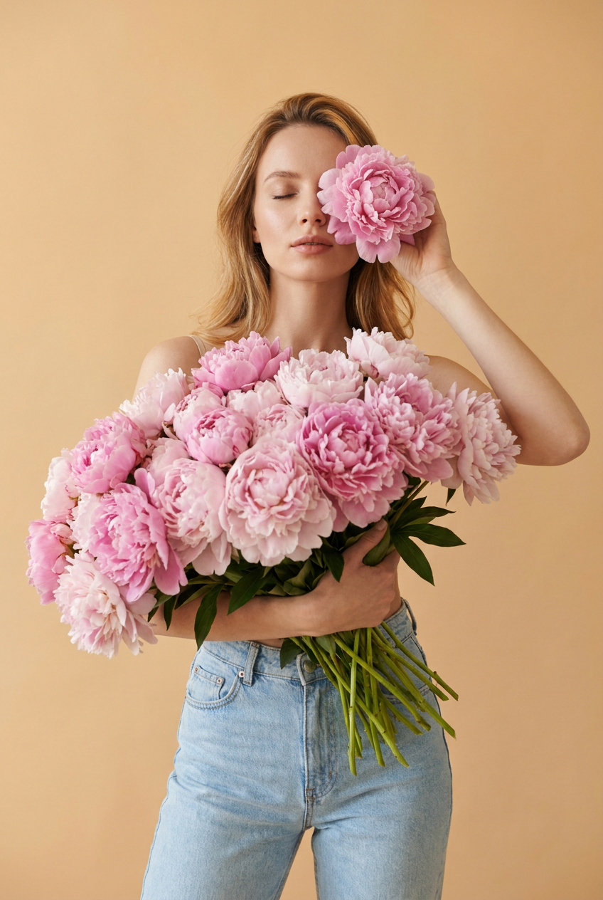
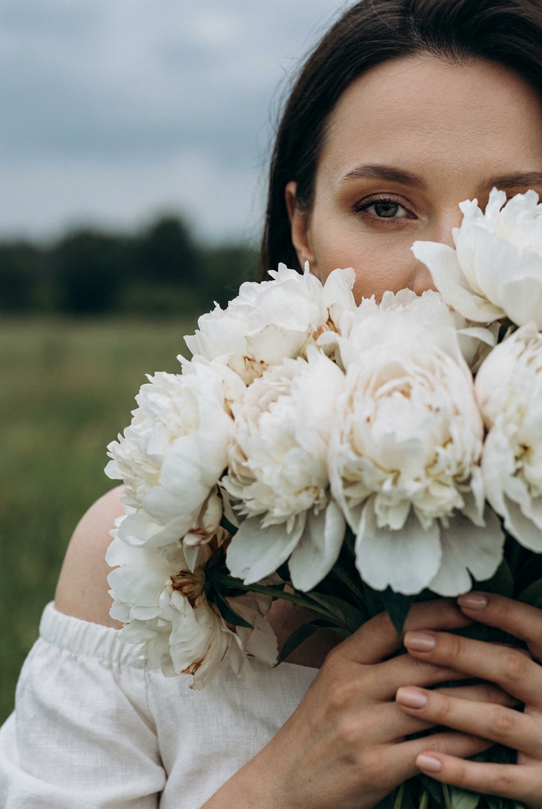
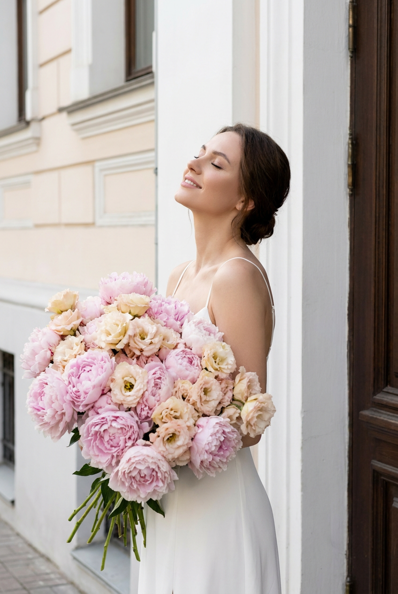
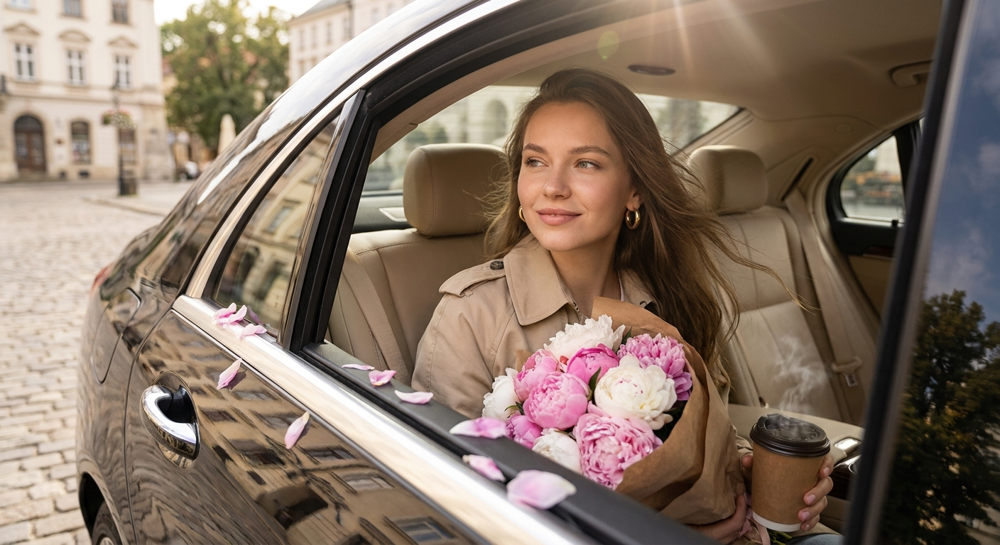
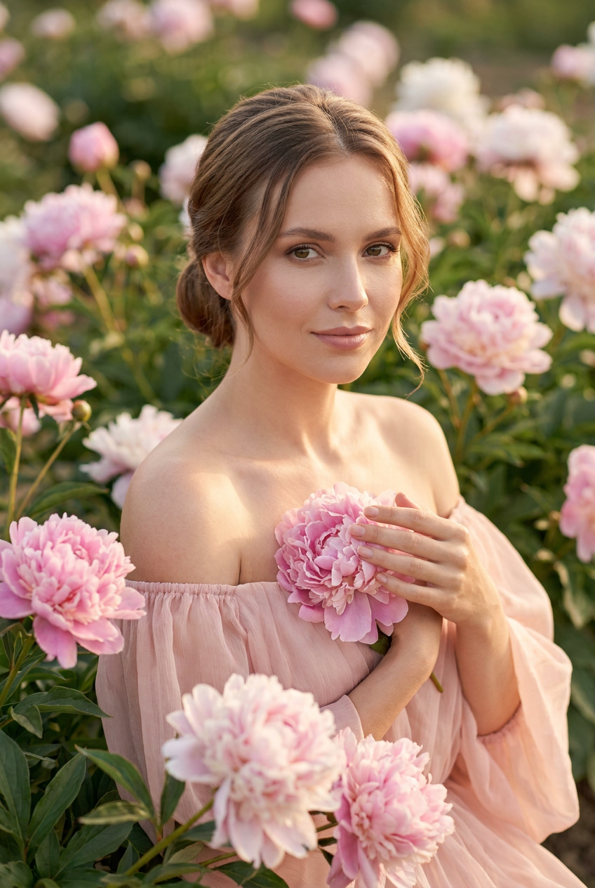
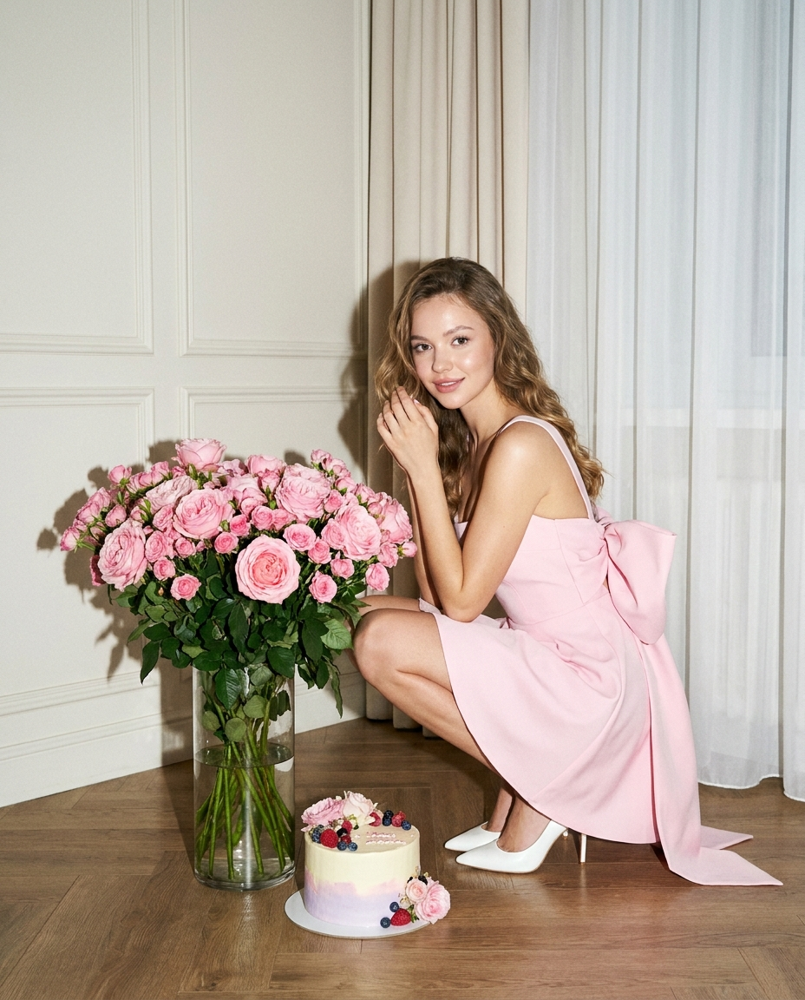
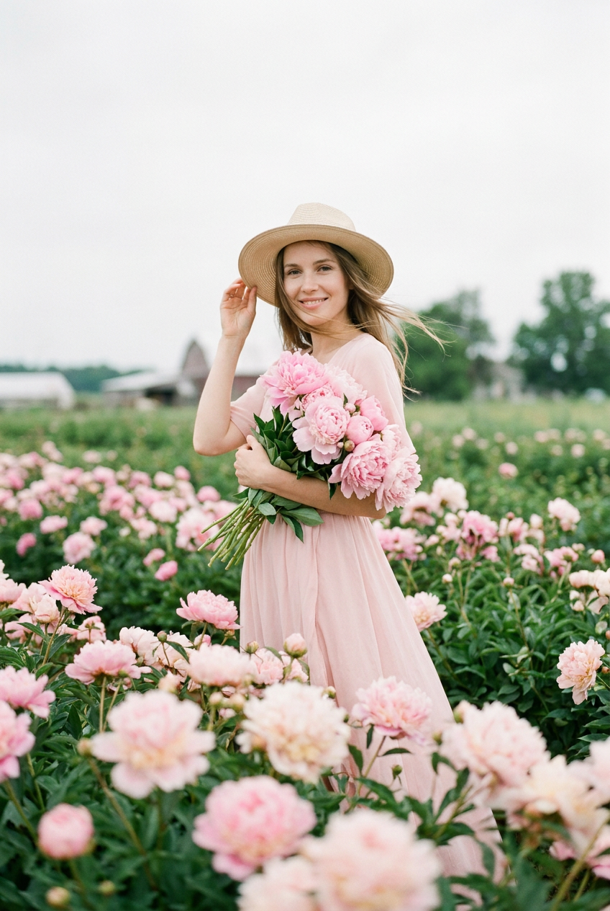
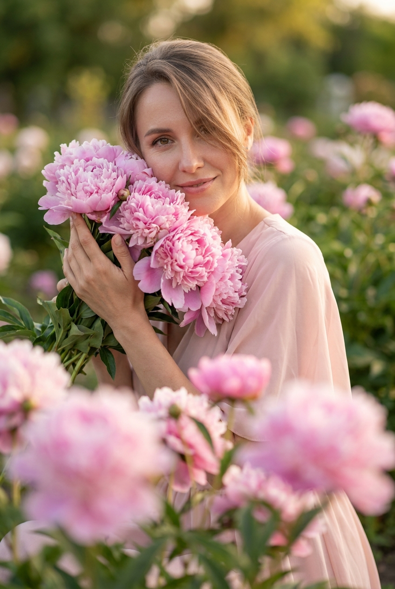
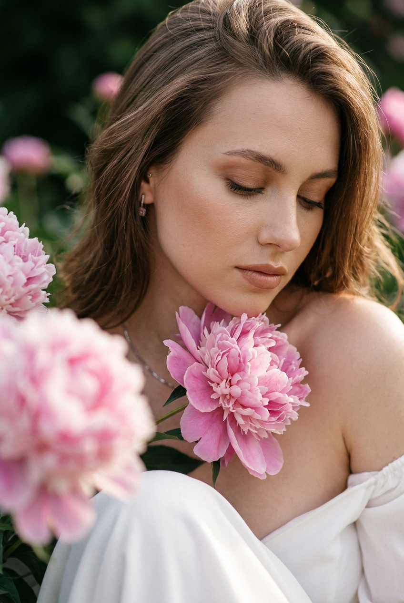
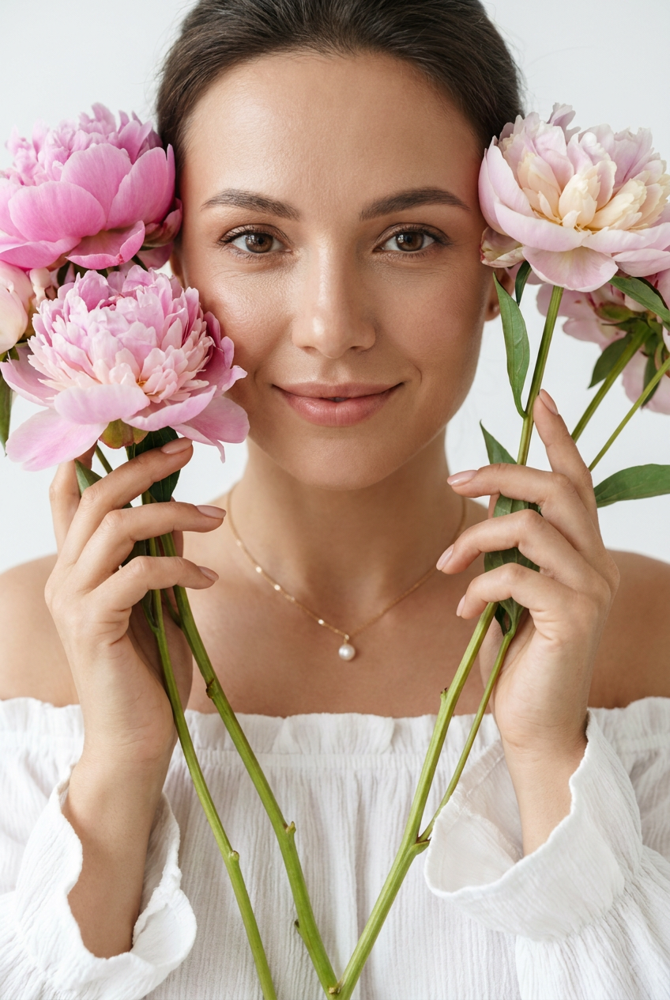

ИИ-фото с пионами: 10 промптов для нейросети

Пионы легко превращают кадр в романтичную открытку, но нейросеть часто путает лепестки, меняет лицо и делает кожу неестественной. Грамотный промпт помогает заранее задать композицию, свет, позу и настроение, чтобы получить фотографию, а не случайную картинку.
В подборке — десять сценариев для портретов с пионами: от крупного кадра в студии и загадочного снимка в поле до поездки в автомобиле, старинного здания и роскошного интерьера. Каждый текст можно использовать как основу и адаптировать под свой референс.
Как сгенерировать такое фото: пошагово
Нужен снимок анфас при ровном свете, лицо в кадре целиком, без тёмных очков и головных уборов. Разрешение от 1000 пикселей по короткой стороне. Чем чётче исходник, тем точнее модель повторит черты.
Выберите сценарий ниже и нажмите «Копировать» — текст уйдёт в буфер целиком, вместе с командой сохранения внешности. Эта команда стоит первой строкой и отвечает за то, чтобы на выходе было ваше лицо, а не случайное.
Кнопка «Сгенерировать» рядом с каждым промптом открывает модель в новой вкладке. Nano Banana Pro работает с референсом лица — в отличие от моделей, которые генерируют портрет с нуля и узнаваемость теряют.
Промпт — в поле ввода, портрет — через загрузку референса. Порядок значения не имеет, но без референса команда сохранения внешности работать не будет: модели нечего сохранять.
Для сторис и ленты берите 9:16, для превью и обложек — 4:3. Первый результат редко идеален: если поза или свет ушли не туда, поправьте соответствующую часть промпта и запустите заново. Обычно хватает двух-трёх итераций.
10 промптов для генерации
1. Нежный студийный портрет
Строго сохранить внешность по загруженному референсу: черты лица, пропорции, мимику и текстуру кожи без изменений. Создай фотореалистичный вертикальный fashion-портрет женщины в светлом минималистичном студийном пространстве. Кадр дорогой, нежный и романтичный, в мягкой чистой палитре с воздушным настроением; модель снята фронтально, корпус немного развёрнут, голова слегка наклонена. Формат вертикальный, крупность — по грудь и ниже, главный акцент на лице, волосах, маленьком цветке у глаза и огромном букете пионов. Используй лицо с загруженного фото: сохрани форму глаз, носа, губ, скул, подбородка и бровей, оттенок кожи, пропорции и узнаваемое выражение. Кожа натуральная, живая, с умеренной ретушью, без пластика и артефактов. Мягкий рассеянный свет, деликатные тени, реалистичные лепестки, editorial-фотография высокого класса.
2. Пионы закрывают лицо

Строго сохранить внешность по загруженному референсу: черты лица, пропорции, мимику и текстуру кожи без изменений. Сделай вертикальный фотореалистичный крупный портрет женщины на открытом воздухе. Очень большой букет белых пионов закрывает почти всё лицо: в правой верхней части кадра оставь видимыми один глаз и фрагмент верхней половины лица, а вторую сторону спрячь в цветах. Съёмка проходит в поле или на лугу; позади мягко размытая зелень, дальняя тёмная линия деревьев и холодное пасмурное небо в верхней части изображения. Настроение интимное, спокойное, слегка загадочное и мрачно-романтичное, цветопередача приглушённая и натуральная. Внешность возьми с референса, точно передай глаз, бровь, нос, губы, скулы, овал, оттенок кожи и естественные пропорции. Не добавляй пластиковую кожу, чрезмерную ретушь или искажения. Деликатный дневной свет, малая глубина резкости, editorial-эстетика.
3. Букет у старого здания

Строго сохранить внешность по загруженному референсу: черты лица, пропорции, мимику и текстуру кожи без изменений. Сгенерируй реалистичный вертикальный портрет девушки у входа в светлое старинное здание. На заднем плане видны белая стена и тёмная деревянная дверь. Модель стоит в пол-оборота, слегка запрокинула голову, глаза закрыты, на лице нежная счастливая улыбка. Она держит огромный роскошный букет светло-розовых пионов и кремово-розовых цветов; композиция пышная, занимает большую часть кадра и частично скрывает тело. На девушке элегантное белое платье с тонкими бретелями, макияж натуральный, образ женственный и романтичный. Используй лицо из загруженного референса, сохрани узнаваемые глаза, брови, губы, нос и овал лица. Добавь мягкий боковой дневной свет, естественные тени, лёгкую глубину резкости, детальную фактуру лепестков и реалистичную кожу. Параметры съёмки: объектив 85 мм, дорогой editorial fashion portrait, воздушная светлая палитра.
4. Пионы в автомобиле

Строго сохранить внешность по загруженному референсу: черты лица, пропорции, мимику и текстуру кожи без изменений. Создай кинематографичный lifestyle-снимок молодой женщины на заднем сиденье роскошного автомобиля с бежевым кожаным салоном. Фотография снята снаружи через открытое окно, словно случайный живой момент, пойманный прохожим или попутчиком. У девушки длинные ухоженные волосы с естественным блеском, лёгкий ветер мягко шевелит пряди. На ней классический бежевый хлопковый тренч с широким поясом, слегка расстёгнутый, в ушах лаконичные золотые серьги-кольца среднего размера. Она смотрит в сторону окна и спокойно улыбается. На коленях лежит огромный пышный букет розовых и белых пионов в фактурной крафтовой бумаге, в одной руке — бумажный стаканчик кофе навынос. Сохрани лицо с референса, натуральную кожу и реалистичные детали. Мягкий дневной свет, естественные отражения на стекле, живой кадр, малая глубина резкости, объектив 50 мм.
5. Портрет среди пионов

Строго сохранить внешность по загруженному референсу: черты лица, пропорции, мимику и текстуру кожи без изменений. Сделай фотореалистичный женский fashion-портрет по грудь и выше в цветущем саду пионов. Женщина стоит среди пышных розовых цветов, корпус немного развёрнут, плечи открыты, голова мягко повёрнута к камере. Взгляд прямой, спокойный и уверенный, выражение нежное, расслабленное, с едва заметной улыбкой. На модели светло-розовое или пудрово-розовое платье с деликатной женственной фактурой. Лицо перенеси с загруженного фото без изменения личности: сохрани форму глаз, носа, губ, скул, подбородка, бровей, оттенок кожи и пропорции. Кожа живая, без пластиковой гладкости и сильной ретуши. Используй пастельную палитру, мягкий рассеянный свет, лёгкое размытие фона, детальные лепестки и дорогую журнальную эстетику. Вертикальная композиция, высокая детализация, реалистичная цветопередача, объектив 85 мм, диафрагма f/2.
6. Пионы в дорогом интерьере

Строго сохранить внешность по загруженному референсу: черты лица, пропорции, мимику и текстуру кожи без изменений. Создай ультрареалистичную вертикальную fashion-фотографию в эстетике современного Vogue, без текста и водяных знаков. Сцена разворачивается в роскошном минималистичном интерьере с оттенками слоновой кости, шампанского и светлого бежевого: классические стеновые панели, струящиеся полупрозрачные шторы, светлый паркет или крупноформатная плитка. Молодая женщина присела на корточки рядом с большой стеклянной вазой. В вазе стоит огромный пышный букет нежно-розовых пионовидных или кустовых роз с множеством бутонов. Девушка смотрит вниз, на цветы, и мягко улыбается; настроение спокойное, женственное, восхищённое. Используй лицо с референса, сохрани индивидуальные черты, натуральную кожу и узнаваемость. Вертикальный формат 4:5 или 9:16, мягкий оконный свет, сдержанные тени, высокая модная эстетика, реалистичная фактура ткани и лепестков.
7. В цветочном поле

Строго сохранить внешность по загруженному референсу: черты лица, пропорции, мимику и текстуру кожи без изменений. Сгенерируй вертикальную фотореалистичную fashion-фотографию женщины в большом поле розовых и нежно-розовых пионов. Цветы должны быть на переднем, среднем и заднем плане, вокруг — густая зелёная листва, а дальний фон мягко размывается, создавая ощущение летней фермы или цветущего сада. Верх кадра занимает светлое серо-белое пасмурное небо. Не добавляй яркое солнце, жёсткие тени или оранжевое закатное свечение. Передай романтичную воздушную атмосферу и естественную цветопередачу. Если используется референс, перенеси лицо женщины, сохранив форму глаз, носа, губ, скул, подбородка, оттенок кожи, мимику и узнаваемость. Лицо должно выглядеть живым, без AI-ошибок, пластиковой кожи и чрезмерной ретуши. Вертикальный editorial-кадр, мягкий рассеянный дневной свет, объектив 85 мм, малая глубина резкости, детальные лепестки и натуральная зелень.
8. Букет крупным планом

Строго сохранить внешность по загруженному референсу: черты лица, пропорции, мимику и текстуру кожи без изменений. Сделай дорогой романтичный вертикальный fashion-портрет женщины в цветущем саду пионов. Модель находится очень близко к объективу, расположена в центре и слегка смещена вправо; крупность — по грудь и выше, главный фокус на лице, волосах и большом букете. Цветы частично обрамляют лицо, букет занимает нижнюю и центральную зоны, перекрывает плечо и грудь. На переднем плане размести крупные розовые пионы совсем рядом с объективом, чтобы получить мягкое боке и ощущение глубины; задний план — размытая зелень сада. Лицо возьми с загруженного фото, сохрани все индивидуальные черты, пропорции, оттенок кожи и спокойное узнаваемое выражение. Кожа реалистичная, без пластика и сильной ретуши. Используй нежную пастельную палитру, мягкий естественный свет, лёгкую глубину резкости, высокую детализацию лепестков, вертикальный формат 4:5, объектив 85 мм.
9. Пион у подбородка

Строго сохранить внешность по загруженному референсу: черты лица, пропорции, мимику и текстуру кожи без изменений. Создай фотореалистичный вертикальный крупный портрет женщины в цветущем саду пионов, снятый в дорогой fashion/editorial-эстетике. Кадр по плечи и выше, лицо занимает центральную область, камера расположена очень близко. Вокруг модели — крупные пышные розово-пудровые пионы. Один большой цветок находится у нижней части подбородка и рядом с плечом, второй частично закрывает левый передний план и сильно размыт, формируя нежное боке. Фон также мягко расфокусирован, чтобы сохранить ощущение романтики, тишины и воздушности. Используй лицо с референса: точно передай глаза, брови, нос, губы, скулы, подбородок, овал, оттенок кожи и узнаваемую мимику. Не меняй личность, не добавляй пластиковую кожу или цифровые искажения. Мягкий рассеянный свет, натуральная пастельная цветопередача, детальные лепестки, вертикальный формат 4:5, объектив 85 мм, диафрагма f/1.8.
10. Светлый портрет с пионами

Строго сохранить внешность по загруженному референсу: черты лица, пропорции, мимику и текстуру кожи без изменений. Сгенерируй очень близкий вертикальный женский портрет по грудь и выше в светлой студийной или почти студийной обстановке. Композиция чистая и воздушная, лицо занимает основную часть кадра, женщина смотрит прямо в объектив. Взгляд тёплый, дружелюбный и притягательный, выражение нежное и спокойное. На модели белый романтичный топ или блузка с открытыми плечами и мягкими рюшами по верхнему краю, ткань имеет деликатную фактуру. Добавь крупный букет нежных пионов, расположенный рядом с лицом и плечами, не перегружая светлый фон. Используй лицо с загруженного фото, сохрани форму глаз, носа, губ, скул, подбородка, бровей, пропорции и оттенок кожи. Натуральная живая кожа без пластика, чрезмерной ретуши и изменения личности. Мягкий рассеянный beauty-свет, пастельная палитра, минималистичный фон, editorial fashion-стиль, объектив 85 мм, диафрагма f/2.
Что важно учесть в этом стиле
Пион в кадре должен быть крупным и узнаваемым: просите нейросеть показать слоистые лепестки, мягкие края и естественное перекрытие цветов. Для романтичного эффекта лучше задавать рассеянный дневной или оконный свет, а не жёсткий источник сверху.
Отдельно описывайте крупность, положение модели и глубину резкости. Формулировки вроде «по плечи», «цветок у подбородка», «размытый передний план» помогают управлять композицией точнее, чем одно слово «красиво». Если нужен портрет с референсом, добавляйте требования к сохранению черт лица, но проверяйте результат после каждой генерации.
Идеи для вариаций
- Замените розовые пионы на молочные, коралловые или бордовые, сохранив мягкий свет.
- Перенесите сцену из сада в оранжерею, на веранду загородного дома или на городской балкон.
- Добавьте винтажную плёночную фактуру, лёгкое зерно и формат кадра 3:4.
- Попросите сделать букет в руках, у лица, на плече или в стеклянной вазе.
- Поменяйте настроение: спокойный прямой взгляд, закрытые глаза с улыбкой или задумчивый профиль.
Как собрать свой промпт
Начните с типа снимка: крупный портрет, кадр по грудь или сценка в полный рост. Затем укажите локацию, положение тела, взгляд, одежду и роль пионов в композиции. После этого добавьте свет, фон, цветовую палитру и технические параметры — например, объектив 85 мм, диафрагму f/1.8 и вертикальный формат 4:5.
Требования к лицу лучше помещать после описания сцены: так нейросеть сначала понимает фотографию целиком, а затем получает задачу сохранить внешность. В конце добавьте ограничения: без лишних пальцев, сломанных лепестков, пластиковой кожи, текста и водяных знаков. Для стабильного результата сделайте 4–8 попыток, меняя за раз только один параметр.
Ошибки, из-за которых кадр не получается
- Слишком общий запрос. Без крупности, позы и положения букета модель может оказаться далеко или потеряться среди цветов.
- Противоречивый свет. Одновременное описание пасмурного неба и яркого заката даёт неестественные тени и странные оттенки кожи.
- Перегруженный букет. Если не указать, что цветы должны частично закрывать тело, нейросеть заполнит ими всё лицо.
- Слабый референс. Размытое или боковое исходное фото хуже передаёт черты; выбирайте снимок с хорошим светом и открытым лицом.
- Нет проверки рук и лепестков. Крупные букеты часто провоцируют слипшиеся пальцы и повторяющиеся цветы, поэтому результат нужно увеличивать и проверять.
Частые вопросы
Как сделать такое ИИ-фото бесплатно?
Попробуйте Kandinsky или Шедеврум: они подходят для генерации по тексту и обычно доступны без оплаты, но могут слабее сохранять лицо по референсу. В Krea AI и Arena.ai можно тестировать разные модели и иногда использовать изображения-референсы, однако бесплатный доступ зависит от текущих лимитов и функций. Полностью точное сходство не гарантирует ни один сервис: потребуется несколько попыток и аккуратно подготовленный исходный снимок.
Как сохранить лицо на ИИ-фото?
Загрузите чёткий портрет без сильных фильтров, а в промпте укажите, какие особенности нужно сохранить: форму глаз, носа, губ, овал лица и оттенок кожи. Не меняйте одновременно возраст, ракурс и выражение — такие правки повышают риск потери сходства.
Как получить реалистичные пионы?
Опишите размер цветов, оттенок, слоистость лепестков и их положение относительно лица. Добавьте мягкую глубину резкости и конкретный источник света. Если лепестки выглядят пластиковыми, попросите натуральную фактуру, живые неровности и детальную макросъёмку.
Какой формат выбрать для публикации?
Для сторис и вертикальных обложек подойдёт 9:16, для поста или портрета в редакционном стиле — 4:5. Генерируйте изображение с запасом по разрешению, а кадрирование выполняйте после проверки лица, рук и краёв букета.